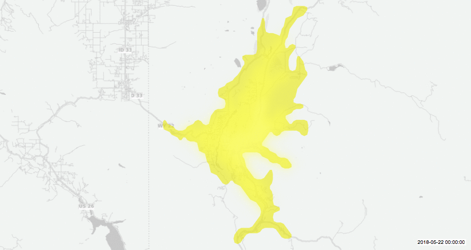

The Heartbeat of the City
22 May, 2018 in Traffic
Vancouver, BC, Canada

Ottawa, ON, Canada

London, ON, Canada

Portland, OR, USA

Tacoma, WA, USA

Jackson, WY, USA
Yogyakarta, Indonesia

Wellington, New Zealand

Sydney, Australia

These maps depict a day in the life of a city based on traffic flows. Each shifting isochrome polygon represents the distance away from the centre of the city that can be reached within 30 minutes. The data was collected from a 24 hour period on 22 May 2018. The gifs loop so that trends in rush hour traffic might come to light. Some cities experience dramatic rush hour slow downs, while others experience only slight traffic changes throughout the day.
Click the images to view them larger.
Completed in conjunction with Anna McDermott, Nate Wisness, and Daman Kang as part of the MSGT program at UW-Tacoma
Data collected from Here.com. Special thanks to Digital Geography for providing a tutorial that served as a starting point.